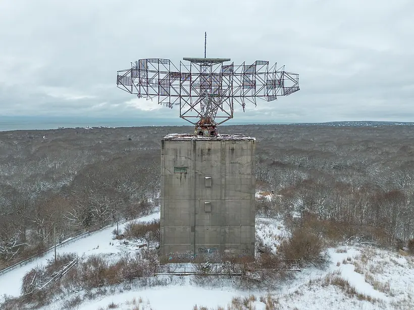
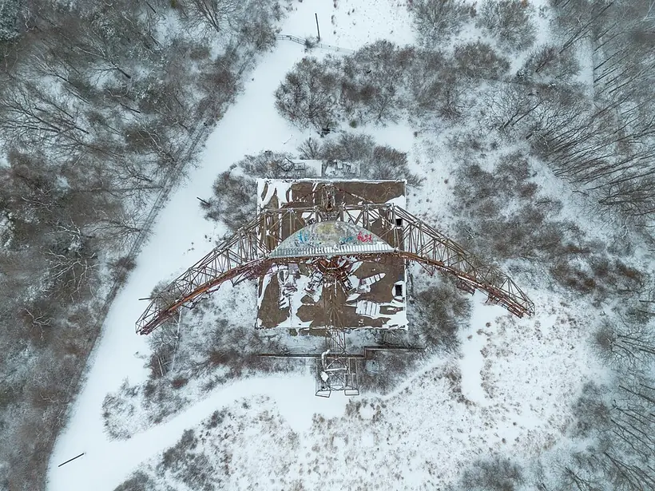
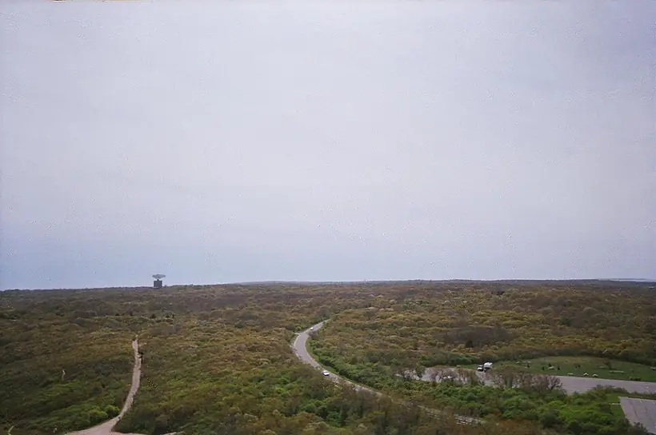

The claim
The Montauk Project is described in books by Preston Nichols and others from 1992: a secret programme at Camp Hero, a Second World War radar station on Long Island, involving mind control, teleportation, time travel and contact with extraterrestrials. A related claim ties it to the Philadelphia Experiment.
Maps, diagrams and images






The record
Camp Hero was a real radar station, decommissioned in 1981 and now a state park. There is no documentary record of a research programme of the kind described, no participant testimony that has been verified, and no physical evidence at the site. The books' authors give differing accounts of the same events.
The pattern — a real military site, a decommissioned facility, and a narrative that arrives decades later — recurs throughout this shelf.
Documented: the radar station, its history and its closure.
Documented: the books and their claims.
Not documented: the programme.
Not found: any physical or documentary trace.
The honest label: fringe.
Why it is in the archive
Because it is the template for the 'secret base' genre, and because the real site is a pleasant park you can visit.
Open resources on this topic
- BookThe Montauk project — Preston B. Nichols · 1992 (Internet Archive, free to read)
- BookThe Montauk Project- Experiments in Time (1992) - Preston B. Nichols with Peter Moon; illustrated by Nina Helm — Preston B. Nichols with Peter Moon · 1992 (Internet Archive, free to read)
- BookThe Montauk Project Experiments In Time — Preston B. Nichols · 1992 (Internet Archive, free to read)
- PapersOpen-access articles: DOAJ · PubMed Central · Internet Archive Scholar
- BooksPublic-domain and borrowable copies: Open Library · Project Gutenberg · Google Books
More images
Cite this page
Momin, S. (2026). The Montauk Project. The Larger World Archive. https://drsamonline.github.io/LARGE_GLOBE/montauk-project.htmlMomin, Sohil. “The Montauk Project.” The Larger World Archive, 2026, https://drsamonline.github.io/LARGE_GLOBE/montauk-project.html.Momin, Sohil. “The Montauk Project.” The Larger World Archive, 2026. https://drsamonline.github.io/LARGE_GLOBE/montauk-project.html.@misc{the2026montauk,
author = {Momin, Sohil},
title = {The Montauk Project},
year = {2026},
howpublished = {The Larger World Archive},
url = {https://drsamonline.github.io/LARGE_GLOBE/montauk-project.html},
note = {Last reviewed 20 November 2026}
}Last reviewed 20 November 2026 · Corrections policy · this page is not peer reviewed
Sources for this page
- Wikipedia, “Montauk Project” — the claimen.wikipedia.org
- Wikipedia, “Camp Hero State Park” — the real siteen.wikipedia.org
- Wikipedia, “Philadelphia Experiment” — the related legenden.wikipedia.org
- Wikipedia, “Radar” — the technology actually thereen.wikipedia.org
- Archive.org — The Montauk Project: Experiments in Timearchive.org/details/the-montauk-project-experiments-in-time-silver-anniversary-edition